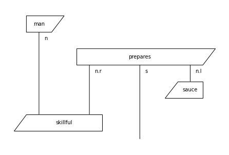
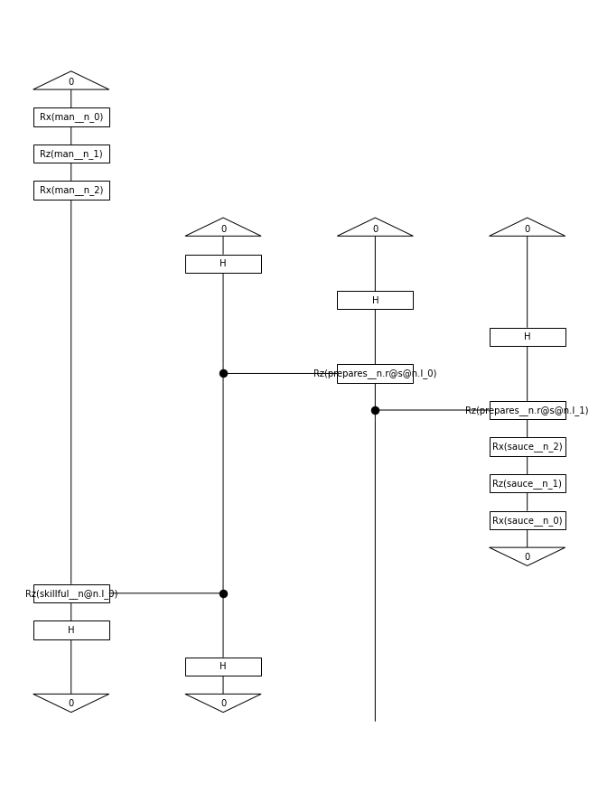
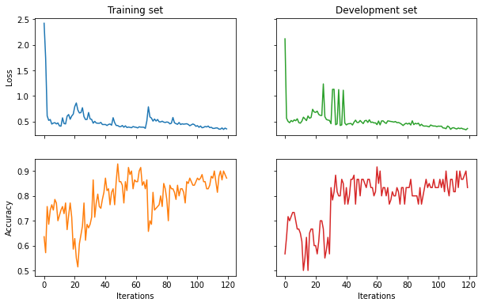

Quantum pipeline using the Quantum Trainer
[1]:
import warnings
warnings.filterwarnings("ignore")
import os
os.environ["TOKENIZERS_PARALLELISM"] = "false"
[2]:
import numpy as np
BATCH_SIZE = 30
EPOCHS = 120
SEED = 2
Read in the data and create diagrams
[3]:
def read_data(filename):
labels, sentences = [], []
with open(filename) as f:
for line in f:
t = int(line[0])
labels.append([t, 1-t])
sentences.append(line[1:].strip())
return labels, sentences
train_labels, train_data = read_data('datasets/mc_train_data.txt')
dev_labels, dev_data = read_data('datasets/mc_dev_data.txt')
test_labels, test_data = read_data('datasets/mc_test_data.txt')
Create diagrams
[4]:
from lambeq import BobcatParser
parser = BobcatParser(verbose='text')
raw_train_diagrams = parser.sentences2diagrams(train_data)
raw_dev_diagrams = parser.sentences2diagrams(dev_data)
raw_test_diagrams = parser.sentences2diagrams(test_data)
Tagging sentences.
Parsing tagged sentences.
Turning parse trees to diagrams.
Tagging sentences.
Parsing tagged sentences.
Turning parse trees to diagrams.
Tagging sentences.
Parsing tagged sentences.
Turning parse trees to diagrams.
Remove the cups
[5]:
from lambeq import remove_cups
train_diagrams = [remove_cups(diagram) for diagram in raw_train_diagrams]
dev_diagrams = [remove_cups(diagram) for diagram in raw_dev_diagrams]
test_diagrams = [remove_cups(diagram) for diagram in raw_test_diagrams]
train_diagrams[0].draw()

Create circuits
[6]:
from lambeq import AtomicType, IQPAnsatz
ansatz = IQPAnsatz({AtomicType.NOUN: 1, AtomicType.SENTENCE: 1},
n_layers=1, n_single_qubit_params=3)
train_circuits = [ansatz(diagram) for diagram in train_diagrams]
dev_circuits = [ansatz(diagram) for diagram in dev_diagrams]
test_circuits = [ansatz(diagram) for diagram in test_diagrams]
train_circuits[0].draw(figsize=(9, 12))

Parameterise
[7]:
from pytket.extensions.qiskit import AerBackend
from lambeq import TketModel
all_circuits = train_circuits+dev_circuits+test_circuits
backend = AerBackend()
backend_config = {
'backend': backend,
'compilation': backend.default_compilation_pass(2),
'shots': 8192
}
model = TketModel.from_diagrams(all_circuits, backend_config=backend_config)
Define evaluation metric
[8]:
loss = lambda y_hat, y: -np.sum(y * np.log(y_hat)) / len(y) # binary cross-entropy loss
acc = lambda y_hat, y: np.sum(np.round(y_hat) == y) / len(y) / 2 # half due to double-counting
Initialize trainer
[9]:
from lambeq import QuantumTrainer, SPSAOptimizer
trainer = QuantumTrainer(
model,
loss_function=loss,
epochs=EPOCHS,
optimizer=SPSAOptimizer,
optim_hyperparams={'a': 0.05, 'c': 0.06, 'A':0.01*EPOCHS},
evaluate_functions={'acc': acc},
evaluate_on_train=True,
verbose = 'text',
seed=0
)
[10]:
from lambeq import Dataset
train_dataset = Dataset(
train_circuits,
train_labels,
batch_size=BATCH_SIZE)
val_dataset = Dataset(dev_circuits, dev_labels, shuffle=False)
Train
[11]:
trainer.fit(train_dataset, val_dataset, logging_step=12)
Epoch 1: train/loss: 2.0801 valid/loss: 1.8392 train/acc: 0.6000 valid/acc: 0.5333
Epoch 12: train/loss: 0.6100 valid/loss: 0.7619 train/acc: 0.5714 valid/acc: 0.4333
Epoch 24: train/loss: 0.5004 valid/loss: 0.6912 train/acc: 0.6857 valid/acc: 0.5667
Epoch 36: train/loss: 0.4908 valid/loss: 0.6744 train/acc: 0.6857 valid/acc: 0.5667
Epoch 48: train/loss: 0.4554 valid/loss: 0.6783 train/acc: 0.7143 valid/acc: 0.6000
Epoch 60: train/loss: 0.4338 valid/loss: 0.6295 train/acc: 0.7000 valid/acc: 0.5667
Epoch 72: train/loss: 0.4191 valid/loss: 0.6003 train/acc: 0.7429 valid/acc: 0.6000
Epoch 84: train/loss: 0.4244 valid/loss: 0.5501 train/acc: 0.7643 valid/acc: 0.6333
Epoch 96: train/loss: 0.3913 valid/loss: 0.5460 train/acc: 0.8143 valid/acc: 0.6333
Epoch 108: train/loss: 0.3836 valid/loss: 0.5127 train/acc: 0.8286 valid/acc: 0.7000
Epoch 120: train/loss: 0.3658 valid/loss: 0.5126 train/acc: 0.8286 valid/acc: 0.7333
Training completed!
Show results
[12]:
import matplotlib.pyplot as plt
fig, ((ax_tl, ax_tr), (ax_bl, ax_br)) = plt.subplots(2, 2, sharex=True, sharey='row', figsize=(10, 6))
ax_tl.set_title('Training set')
ax_tr.set_title('Development set')
ax_bl.set_xlabel('Iterations')
ax_br.set_xlabel('Iterations')
ax_bl.set_ylabel('Accuracy')
ax_tl.set_ylabel('Loss')
colours = iter(plt.rcParams['axes.prop_cycle'].by_key()['color'])
ax_tl.plot(trainer.train_epoch_costs, color=next(colours))
ax_bl.plot(trainer.train_results['acc'], color=next(colours))
ax_tr.plot(trainer.val_costs, color=next(colours))
ax_br.plot(trainer.val_results['acc'], color=next(colours))
test_acc = acc(model(test_circuits), test_labels)
print('Test accuracy:', test_acc)
Test accuracy: 0.75
